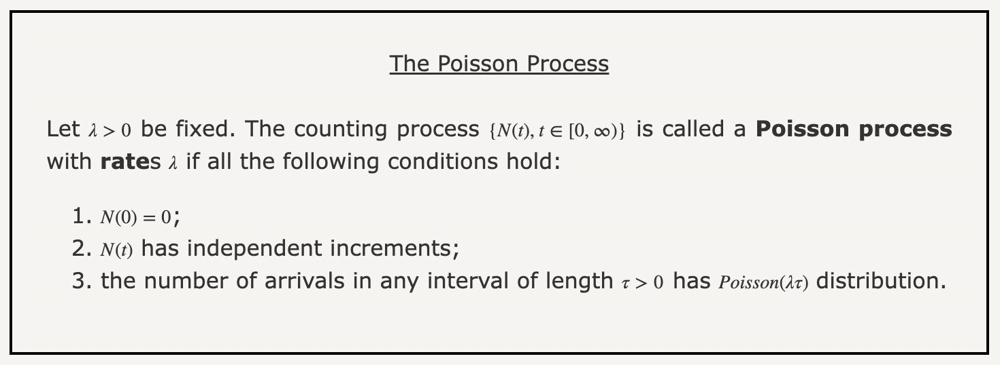
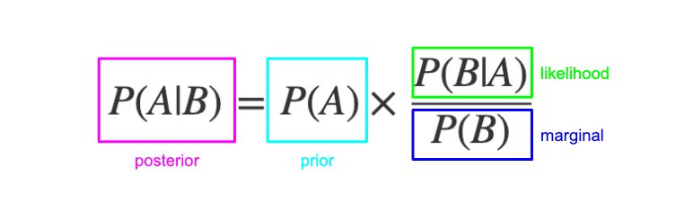

# Loading diversitree
library(diversitree)Loading required package: apeBirth-death models are critical in evolutionary biology and function to help researchers understand species diversification patterns over time. These models describe how species originate (speciation) and disappear (extinction), providing valuable insights into phylogenetic tree structures when we might not have the resources to make direct observations. In this module, we provide an overview of the diversitree package and its utility in conducting comparative phylogenetic analyses using the birth-death model.
Understand Birth-Death Modeling: Learn the principles of constant rate birth-death models and their application in evolutionary biology
Simulate Phylogenetic Trees: Use the diversitree R package to create and visualize evolutionary trees based on speciation and extinction rates
Understand and Apply MLEs: Apply Maximum Likelihood Estimation (MLE) to determine speciation and extinction rates
Perform Bayesian Analysis with MCMC: Implement Markov Chain Monte Carlo (MCMC) methods to explore posterior distributions (where each value depends only on the previous one) for model parameters
A birth-death model is a continuous-time Markov process used to track changes in the number of species (or lineages) through time. It consists of two main parameters:
Speciation Rate (\(\lambda\)): The rate at which new species emerge
Extinction Rate (\(\mu\)): The rate at which species go extinct
These models assume that each event (speciation or extinction) follows a Poisson process, meaning that the time to the next event follows an exponential distribution with a rate of \(λ + μ\). The probability that the next event is speciation is \(λ/(μ + λ)\), while the probability of extinction is \(μ/(μ + λ)\).
Poisson processes model random events over time or space, especially count data … i.e.:
Number of kids born in a town per year
Number of car accidents at an intersection per year
Number of emails you get per hour

Let’s say we have a biased 6-sided die:
How did we get here? This is purely a probability ratio — we’re saying: 2/3 of events are speciation and 1/3 are extinction
Total event rate: \(\lambda + \mu = 3\)
Probability of speciation: \(P(\text{speciation}) = \frac{\lambda}{\lambda + \mu} = \frac{2}{3}\)
Probability of extinction: \(P(\text{extinction}) = \frac{\mu}{\lambda + \mu} = \frac{1}{3}\)
Birth-death models rely on the memoryless property of Markov Chains, where the probability of a future state depends only on the current state, not past events/how we got there. Think of the board game Chutes and Ladders. In this game, a player’s movement is determined solely by their current position and number on the die that they roll.

In this module we will focus on a specific subclass of Markov Chains:
Markov Chain: A sequence where each value depends only on the previous one.
Understanding the distribution of species and traits across them is central to evolutionary biology. Birth-death models help answer questions like:
Why do some clades have more species than others?
How do extinction rates vary across different evolutionary lineages?
What role do trait evolution and environmental factors play in diversification?
Comparative phylogenetic methods, such as those implemented in diversitree, provide a statistical framework for testing hypotheses about species diversification and help us to understand and model diversification better when we are working with sources such as the fossil record, where chronological data on speciation or extinction may not be explicitly available. Many scientific papers also utilize diversitree:
diversitree is an R package useful for comparative phylogenetic analyses. In particular, it focuses on diversification and character evolution. It’s a powerful and very useful package, and we will only be scratching the surface of what it can do. We’d highly recommend looking further into diversitree–some of the sources in our references are excellent places to start!
# Loading diversitree
library(diversitree)Loading required package: apeThe two parameters for a simple constant-rate birth-death model are \(λ\) and \(µ\). \(λ\) represents the speciation rate in our simulated phylogeny, while \(µ\) represents the extinction rate. We’ll start by making a tree using these parameters, as well as the maximum number of species (max.taxa = ... ) we’d like our model to diversify to.
# Defining our parameters
lambda <- 0.2
mu <- 0.05
# Making our tree
set.seed(1)
phylo <- tree.bd(c(lambda, mu), max.taxa = 100) # our tree should terminate at 100 speciesWe now have a tree modeled, but we don’t see anything! Let’s look a bit further into what exactly our model consists of:
str(phylo)List of 6
$ edge : int [1:198, 1:2] 101 102 103 104 105 106 107 108 109 110 ...
$ Nnode : int 99
$ tip.label : chr [1:100] "sp7" "sp10" "sp12" "sp15" ...
$ node.label : chr [1:99] "nd1" "nd2" "nd4" "nd6" ...
$ edge.length: num [1:198] 0.28 0.344 2.23 0.176 1.047 ...
$ orig :'data.frame': 228 obs. of 8 variables:
..$ idx : int [1:228] 2 3 4 5 6 7 9 10 11 12 ...
..$ len : num [1:228] 0.28 2.423 0.344 3.186 2.23 ...
..$ parent : num [1:228] 1 1 2 2 4 4 3 6 6 10 ...
..$ extinct: logi [1:228] FALSE FALSE FALSE FALSE FALSE FALSE ...
..$ split : logi [1:228] TRUE TRUE TRUE TRUE TRUE TRUE ...
..$ idx2 : num [1:228] 132 133 134 135 136 137 138 139 140 141 ...
..$ parent2: num [1:228] 131 131 132 132 134 134 133 136 136 139 ...
..$ name : chr [1:228] NA NA NA NA ...
..- attr(*, "t")= num 20.6
- attr(*, "class")= chr "phylo"
- attr(*, "order")= chr "cladewise"summary(phylo)
Phylogenetic tree: phylo
Number of tips: 100
Number of nodes: 99
Branch lengths:
mean: 2.60411
variance: 5.534924
distribution summary:
Min. 1st Qu. Median 3rd Qu. Max.
0.01371267 0.76672055 1.97072791 3.87996747 13.53512476
No root edge.
First ten tip labels: sp7
sp10
sp12
sp15
sp19
sp20
sp22
sp23
sp25
sp28
First ten node labels: nd1
nd2
nd4
nd6
nd9
nd11
nd15
nd31
nd60
nd92As we can see, our model takes the form of a list. summary() gives us a bit more relevant information about our tree. The labels won’t be too important for our analysis today, but the branch length metrics can tell us something about how quickly our speciation is occurring (we’ll investigate this relationship a bit further in Challenge 2).
Where’s the fun of a tree that you can’t see? It’s time to start…
Plotting a tree is as simple as sticking it into the plot() function:
plot(phylo)
We can finally see our tree, but it’s a bit busy. Let’s quickly zoom in a bit and look at the labels on the right. To do so, we’ll make a much smaller tree.
Make and plot a new tree that only has ten species at the end instead of 100. If you’re going to set a seed, use a number other than 1 (we’ll see why in a moment).
set.seed(2)
phylo_mini <- tree.bd(c(lambda, mu), max.taxa = 10) # our tree will end up with 10 species instead of 100
plot(phylo_mini, no.margin = TRUE)
We can see that the labels on the right are the ten species our model ends up with, but they aren’t actually numbered 1-10. Why might that be?
You may have wondered why we specified not to use set.seed(1) in your tree. It turns out that seed 1 actually doesn’t have any extinction! What are the chances of that ? (we’re not actually asking you to calculate it)
The labels are all well and good for a small tree, but in the case of our original 100-species model, it’s way too messy to mean anything. Luckily, we can make it a bit simpler using some optional commands in the plot function (you may have noticed one of these in our solution above).
plot(phylo, no.margin = TRUE, show.tip.label = FALSE)
# no.margin = TRUE allows our plot to take up more of the output window, while show.tip.label = FALSE gets rid of the labels for our simulated 100 final speciesMake a function that takes lambda, mu, and max taxa as inputs and outputs a plot of a simulated phylogeny tree. Lambda and mu should have no default values, while max taxa should default to 100.
phy_plot <- function(lambda, mu, max.taxa = 100) {
phy <- tree.bd(c(lambda, mu), max.taxa = max.taxa)
plot(phy, no.margin = TRUE, show.tip.label = FALSE)
}Using your function, experiment with different scenarios.
What changes in our model if speciation rate and extinction rate increase/decrease?
In what situations is your function returning an error? Why might that be?
Modify your function to include a summary of the model created. How does changing the parameters affect the mean, variance, and distribution of branch length?
phy_plot <- function(lambda, mu, max.taxa = 100) {
phy <- tree.bd(c(lambda, mu), max.taxa = max.taxa)
plot(phy, no.margin = TRUE, show.tip.label = FALSE)
summary(phy)
}Making a cool tree is all well and good, but if we actually want some substantive statistics it’s time to get into our analysis…
First things first, we need to construct a likelihood function. The likelihood function of a birth-death model estimates the probability of observing a given phylogenetic tree under the assumed rates of speciation and extinction. It will form the backbone of both of our primary analysis methods.
For each branching event occurring at time \(t_i\) (the i-th branching event), we define:
\(p_o(t_i)\): Probability that a lineage goes extinct before time \(t_i\)
\(p_1(t_i)\): Probability that a lineage survives and splits by \(t_i\)
These probabilities are derived from the functions of λ and µ, which allow for model-fitting to empirical phylogenetic data. In our case, these variables will factor into the beautiful and not at all confusing equation derived in Nee et al. (1994):
\[
lik=(N-1)!\lambda^{N-2}\left\{ \prod_{i=3}^{N}P(t_i,T) \right\}(1-u_{x_2})^2\prod_{i=3}^{N}(1-u_{x_i})
\]
In addition to \(t_i\), we see several new variables. \(T\) represents the present time, \(N\) is the total number of lineages in the phylogeny, and \((1-u_{x_i})\) is the probability of a single progeny after an amount of time \(x_i\).
This equation is useful, but in our case it would likely be more helpful to see a different derivation of the likelihood, also found in Nee et al. (1994):
\[ lik=(N-1)!(\lambda-\mu)^{N-2}exp\left((\lambda-\mu)\sum_{n=2}^{N-1}x_{n+1}\right)(1-\frac{\mu}{\lambda})^N\prod_{n=2}^{N}\frac{1}{(exp((\lambda-\mu)x_n)-\frac{\mu}{\lambda})^2} \]
Don’t worry, we’re not going to go through the whole thing! This equation is longer, but it also contains more familiar components that may be easier to understand conceptually.
\(λ\) and \(µ\) are recognizable–we used them earlier, and, as we’ll see, they’re the two parameters taken by the diversitree likelihood function. We also saw \(N\) in the earlier equation–remember, it’s the total number of lineages in the phylogeny. Apart from those, there is only one other variable that we haven’t seen before: \(x_n\). It represents the length of time between the present and the birth of the \(n\)th lineage. We’ll delve a bit further into how these variables come together, but first let’s actually make our likelihood function. The function to create it in diversitree is make.bd() .
lik <- make.bd(phylo) # notice that the function is based on our model created above. That model had a seed set for it, so we can expect consistent values for "lik" as well.Our new function takes values of \(λ\) and \(µ\) as inputs and returns the log likelihood of the parameters. Let’s try it with the values we used for our initial tree:
lik(c(0.1, 0.03))[1] 76.44949We’re going to take a break from coding for a moment and check in again on our conceptual understanding. Given the likelihood equation we saw above, why does the function take \(λ\) and \(µ\) as inputs, but not \(N\) and \(x_n\)?
Remember that \(N\) and \(x_n\) are both defined in our tree that we’re basing the likelihood function on. Likelihood functions are based on actual “observed” data–in this case our tree–and tell use the probability of seeing that result under different parameter values. In the case of a constant-rate birth-death model, \(λ\) and \(µ\) are the only two parameters. \(N\) and \(x_n\) are outputted aspects of the simulated phylogeny, and thus can’t be changed in the likelihood function.
One more note: when typing the function out, you may have noticed that it takes another argument, called condition.surv. This argument, which is on by default, dictates whether the likelihood is conditional on two lineages surviving to the present. As we can see, turning it off changes the likelihood (we won’t get into the math behind that here).
lik(c(0.1, 0.03), condition.surv = FALSE)[1] 73.61655We can run all sorts of different parameters in our likelihood function, but the meaning of the outputs isn’t necessarily immediately obvious. Let’s try a few different \(λ\) and \(µ\) combinations:
lik(c(0.1, 0.03))[1] 76.44949lik(c(0.2, 0.05))[1] 97.34963lik(c(0.3, 0.06))[1] 91.71596How do we interpret these likelihood values?
While all of these likelihood values are positive, they can also be negative–this has to do with how log-likelihood is calculated here. When lik() runs, the log-likelihood of each branch is computed, and then these small probabilities are summed to give the total log-likelihood of the tree. That is, if you have a tree with \(n\) branches, each contributing a log-likelihood value, the total log-likelihood is the sum of the log-likelihoods from all \(n\) branches.
When we compare these total values (the final output you see for each of the lik() functions here), we are looking for the most positive value among these results. In this case, \(λ\) = 0.2 and \(µ\) = 0.05 are the parameters for a model that has the largest log-likelihood for the phylo tree.
You may wonder how we can be sure that a set of parameters are the best-fitting of all the possibilities. You can imagine that a guess and check method would take a while and not be a reasonable way to approach the problem. Luckily for us, the power of R will allow us to do this rather efficiently! Next, we will be looking at ways to estimate the parameters for a give tree with the maximum likelihood…
Lets start by making a slight smaller version of phylo, phylo_small. The following analysis is still valid for larger models, but sometimes computers have a harder time running the following steps with bigger trees, so we’re going to start simple!
set.seed(3)
phylo_small <- tree.bd(c(0.2, 0.1), max.taxa = 70) # make a new tree with fewer taxalik_small <- make.bd(phylo_small) # define our likelihood function for phylo_small
plot(phylo_small, no.margin = TRUE, show.tip.label = FALSE) # plot our new tree (a bit more easy to work with now!)
Given the tree phylo_small, we’re going to use Maximum Likelihood Estimation (MLE) to estimate the parameters (\(λ\) and \(µ\)) with values that maximize the probability of observing our phylo_small tree.
Earlier, we showed how we could compare likelihood functions with different parameter values inputted in order to assess how well those given parameter value maximize the likelihood of observing the phylo data. We could make an algorithm that searches for the parameter values that maximize this likelihood score for phylo_small. This function would would iteratively adjust parameters in search of values that minimize the negative log-likelihood (which translates to maximizing the likelihood if you recall how log values work!)
This optimization process adjusts the parameters, beginning with the initial ones we provide, and then continuously updates the parameters in order to “improve” the likelihood. This process eventually converges on a final solution, which is the output we get in the form of a set of parameters. The process ceases (or “converges”) when adjustments to the parameters no longer change/improve the likelihood significantly.
The following likelihood surface plot might be helpful in giving you a rough idea of what point the algorithm might come when searching for the optimized parameters for phylo_small. You can get an idea from this plot what values we might might more or less expect when we finally perform our analysis. Plus, it’s fun to look at!
lambda_vals <- seq(0.1, 0.3, length.out = 50) # define a range for lambda values
mu_vals <- seq(0.01, 0.2, length.out = 50) # define a range for mu values
lik_matrix <- outer(lambda_vals, mu_vals, Vectorize(function(lambda, mu) lik_small(c(lambda, mu))))
# lambda and mu "vectorize" so they can take multiple inputs (in the range of lambda_vals and mu_vals, respectively)
#lik_small will compute the likelihood for a mu/lambda pair (which will be indicated by relative color)
filled.contour(lambda_vals, mu_vals, lik_matrix,
color.palette = colorRampPalette(c("white", "blue", "darkblue")),
xlab = expression(lambda), ylab = expression(mu),
main = "Likelihood Surface for the Phylo-Small Model") 
# filled.contour will give you a plot with color shading
# color.palette defines colors from low likelihood (white) to high liklihood (dark blue)
# expression formats mu and lambda in mathematical notation (makes them look like the Greek symbols we know them as)Luckily, diversitree has a built-in function, find.mle, which abstracts this iterative optimization process. This allows us to find the parameters that maximize the likelihood for a certain tree very quickly. Lets take a look at how to use find.mle and other functions to perform a Maximum Likelihood (ML) analysis.
Good initial values can help the optimization process run a bit better by helping the optimization algorithm converge faster and avoid getting stuck around local minima. If the initial values are far away from the true values, the optimization often fails or gives unreliable results. So how do you decide a good initial values? Usually, researchers won’t know the speciation and extinction rates (0.2 and 0.1 respectively) like we do. There is no “right” way to go about defining these initial values, and there are plenty of ways being developed to decide this a bit more systematically. Often, it is the case that ecologists, by virtue of study and lot of time spent observing species and doing various analyses, have a pretty good idea of plausible starting points. Our initial guesses for lambda and mu, from which the algorithm will continue from, will be 0.1 and 0.05, respectively. Since we have a pretty good idea of what these true values are already (given that we were the ones that defined them), we’ll start off with a guess a little far from the truth.
initial_values <- c(0.1, 0.05) # 0.1 = initial guess for lambda, 0.05 = initial guess for mufit_small <- find.mle(lik_small, initial_values, method = "subplex", control = list(maxit = 10000)) The default method for birth-death models is “nlm” (non-linear minimization), but other methods like “subplex” can be used for more complex trees (though sometimes this method is slower). If you find that the default isn’t working, you can try a different method (like subplex), as we did here. The landscape of an evolutionary tree is a little complex, so we have used subplex for our demonstration.
control = list(maxit = 10000) is a voluntary additional setting. 10,000 is the maximum number of iterations that this algorithm will be allowed to perform. If the optimization doesn’t converge within 10,000 iterations, then a warning will be issued and it will stop running. Increasing the number of iterations with maxit gives the optimizer more chances to find the best parameter values.
coef(fit_small) lambda mu
0.1845795 0.1083298 Now we have our fitted \(λ\) and \(µ\)! Notice that these values are pretty close to \(λ\) = 0.2 and \(µ\) = 0.1 (which we know to be the true values).
Let’s use logLik to extract the log-likelihood for the Maximum Likelihood (ML) point from our fitted model!
logLik(fit_small)'log Lik.' 18.47938 (df=2)So, our log-likelihood for the model after Maximum Likelihood Estimation is 18.47938.
By the way, this is the same as calculating the likelihood function for any parameter, as we did previously:
lik_small(coef(fit_small))[1] 18.47938So they’re the same (as we would expect)! logLik is just a special command we can use here that works with the MLE model results. But, by being associated with a specific model here, logLik doesn’t just give you the likelihood of parameters you manually input (as lik() or lik_small() do), it ALSO can be used to evaluate how well the MLE-fitted model (fit_small) works for modeling the phylo_small tree with these optimized parameters (when compared to the likelihoods of other models).
Depending on your fitted model, you may be seeing a negative number and wondering why that is. It’s important to remember that the likelihood functions do not always (or even often) return positive values. 18.47938 is the highest (as in the least negative/most positive) likelihood value for this run of the algorithm, but you may find that your likelihood value is different.
note: df = 2 refers to the degrees of freedom. In this context, it really indicates the number of free parameters being estimated for the fitted model. In the case of the birth-death model, the parameters being estimated are \(\lambda\) and \(\mu\). Since there are 2 estimated parameters, df is equal to 2
If you find the degrees of freedom redundant here, you can also just call:
fit_small$lnLik[1] 18.47938The Yule model (“pure birth” model) assumes \(mu\) = 0.
lik.yule <- constrain(lik_small, mu ~ 0) # pure birth model (Yule) where the extinction rate = 0 (parameter is limited to 0 with the constrain() function)
argnames(lik.yule) # output = "lambda" because lambda is the only parameter free to vary here; lambda should be the only output here[1] "lambda"fit_yule <- find.mle(lik.yule, coef(fit_small)[1], "subplex", control = list(maxit = 10000))
fit_yule$par
lambda
0.1245209
$lnLik
[1] 16.52117
$counts
[1] 30
$convergence
[1] 0
$message
[1] "success! tolerance satisfied"
$hessian
NULL
$method
[1] "subplex"
$par.full
lambda mu
0.1245209 0.0000000
$func.class
[1] "constrained" "bd" "dtlik" "function"
attr(,"func")
Constant rate birth-death likelihood function:
* Parameter vector takes 1 elements:
- lambda
* Function constrained (original took 2 elements):
- mu ~ 0
* Function takes arguments (with defaults)
- pars: Parameter vector
- ...: Additional arguments to underlying function
- pars.only [FALSE]: Return full parameter vector?
* Phylogeny with 70 tips and 69 nodes
- Taxa: sp62, sp63, sp66, sp69, sp82, sp85, sp89, sp90, sp93, ...
* Reference:
- Nee et al. (1994) doi:10.1098/rstb.1994.0068
R definition:
function (pars, ..., pars.only = FALSE)
attr(,"class")
[1] "fit.mle.bd" "fit.mle" Now, we’ll use an ANOVA test to perform a likelihood ratio test:
anova(fit_small, fit_yule) Df lnLik AIC ChiSq Pr(>|Chi|)
full 2 18.479 -32.959
model 1 1 16.521 -31.042 3.9164 0.04782 *
---
Signif. codes: 0 '***' 0.001 '**' 0.01 '*' 0.05 '.' 0.1 ' ' 1A lower AIC (Akaike Information Criterion) indicates that the “full” model (fit_small) fits the data better than the Yule model (shown as Model 1 here; see significance codes for significance level). Briefly, in model selection AIC penalizes models that have a higher level of complexity (i.e. more parameters). Despite being more complex, the full model still fits the phylo_small tree better. Sometimes the tradeoff between complexity and fit will favor the simpler model (the Yule model). In fact, some of you might see that result.
Also notice that the lnLik (the log likelihood) for fit_small is more positive than fit_yule. The AIC itself is based on the likelihood of the model so this should be expected. That is, the favorable model should have a higher likelihood value and a lower AIC.
While MLE can help us estimate singular values for \(λ\) and \(µ\), it does not mean that it is accurate. MLE gives a single “best-fit” estimate but it does not account for uncertainty. This is especially important when assessing phylogenetic trees, since they can vary in size and can be incomplete. An alternative way is to find a range of values that \(λ\) and \(µ\) have a high probability of being. This probability distribution is termed a posterior distribution and we can arrive to this result by performing Bayesian analysis using the Markov chain Monte Carlo (MCMC) algorithm.
Let’s break down those terrifying sounding terms and get familiar with them!
The reason we want to employ Bayesian analysis on this is because this algorithm will use previous assumptions and the data available to us (likelihood function derived from phylogenetic tree) to arrive at our desired posterior distribution.
Previous assumptions are characterized as a prior distribution representing existing knowledge or assumptions about model parameters before observing the data. These distributions are probability distributions (e.g., uniform, exponential, normal) that mark the possible ranges for parameters which in our case are speciation (\(\lambda\)) and extinction (\(\mu\)) rates.
These prior probability distributions affect our posterior distribution. For example, if we had an exponential prior distribution on our parameters, then even if our new data offers much higher values, the model will emphasize our parameters to lie on the lower end but can still permit higher values if the data supports it more. If we don’t have very informative prior information, we can assume the prior distribution to be uniform, letting our new data have more say in parameter inference.
This can be seen in Bayes’ Theorem:

Source: freeCodeCamp
What about MCMC? For this, we can break it down into it’s two terms: Markov chain, and Monte Carlo.
A Markov chain is a stochastic model (meaning it accounts for randomness) that experiences transitions from one state to the next based on the probabilities of the current state. The easiest way to visualize this is through an image!

Source: geeksforgeeks
What we have above is a simple weather model where we have 3 states: rainy, cloudy, and sunny. The way to read this is by paying attention to the direction of the arrows. For example, the arrow that self-points to the sunny state means that if today is sunny, the chances of being sunny again is of 0.8. The arrow that points from sunny to cloudy says that if today is sunny, then the probability of it being cloudy is of 0.1. Easy!
Using this model, we can perform the chain part of Markov chain. This means that we can create a path or chain of events by “walking” from state to state at random. But remember! In a Markov chain, the probability of transitioning from a current state to a future state solely depends on the current state and not its history of states! Let’s do a challenge to see if you understood the concept.
Taking the weather model, we tracked the weather states of 7 days beginning on a rainy day:
rainy -> cloudy -> rainy -> sunny -> sunny -> rainy -> rainy -> ...
What is the probability of it being a cloudy day on the 8th day?
0.3
Let’s talk about the Monte Carlo part of the MCMC. In essence, a Monte Carlo Simulation is a model that is used to predict the probability of a range of outcomes when accounting a complex situation where many random variables could influence real life outcomes. It does this by repeated random sampling. Sounds familiar right? That’s cause it is very similar in concept to bootstrapping! What differs is that Monte Carlo simulates data from a model, while bootstrapping simply re-samples from a dataset.
Fun fact! the model is named after the famous Monte Carlo Casino in Monaco as a reference to the randomness associated with gambling! Don’t gamble, learn stats instead!
We can use this simple method to solve complex questions!
Now it’s time to merge all of these concepts to define MCMC. This algorithm is a Bayesian approach, meaning that previous assumptions are important to how the new data will be interpreted. The algorithm works by repeatedly proposing random parameter values and evaluating how well they fit the data (using likelihoods and priors, if provided). It then decides whether to accept or reject them using the Metropolis-Hastings algorithm. This decision process works by proposing a new sample based on the current sample and then accepting or rejecting it depending on the ratio of the likelihood of the proposed value to the likelihood of the current value. As we repeat this process, due to the acceptance rule, we will slowly accumulate samples that approximate the posterior distribution. This posterior distribution in our case means the range of values our speciation rate (\(λ\)) and extinction rate (\(\mu\)) parameters take.
Enough textbook info and let’s see step by step how the algorithm works!
Let’s set everything up:
set.seed(2)
phy <- tree.bd(c(.1,.03), max.taxa = 100) # simulate phylogenetic tree
lik <- make.bd(phy) # create likelihood function based on simulated treeWe can make our initial guesses of \(λ\) and \(μ\) based on the results from MLE!
fit <- find.mle(lik, c(0.1, 0.03), method = "subplex")
coef(fit) # use coef() to see the estimated parameters lambda mu
0.08716469 0.01231621 We can then get the likelihood value of this current value:
current_par <- c(coef(fit)[[1]], coef(fit)[[2]]) # Use indexing to extract the values for lambda and mu
current_lik <- lik(current_par)
current_lik[1] 14.80924Our next proposed value can be a random value that is 0.1 steps away. We can denote this step variable as w . Please note that parameters in our case cannot be negative since you can’t have a negative rate of speciation and extinction.
set.seed(2)
w = 0.1 # We assume that the maximum step size for each rate is 0.1
proposal_par <- current_par + runif(2, -w, w) # Generates 2 random numbers between -w and w
proposal_par # Make sure that the parameters are not negative![1] 0.02414114 0.05279102From these proposal parameters we can derive the new likelihood by inserting it to our likelihood function.
proposal_lik <- lik(proposal_par)
proposal_lik[1] -74.51499As directed by the Metropolis-Hastings part of the algorithm, we now need to decide if to accept or reject this new set of parameters. As mentioned we can follow this formula:
\[ r=L(current)/L(proposal) \]
But since lik gives us the log of likelihood values, we can rework the formula to this:
\[ log r=logL(proposal)−logL(current) \]
log_r <- proposal_lik - current_lik
r <- exp(log_r) # Since everything is in log, we use exp() to show us the actual value
r[1] 1.61056e-39The r value we received is extremely low, meaning that the proposed parameters performed worse than the current parameters. One could automatically discard them, but sometimes these worse values have a place in the final distribution of values. To decide on this, we can write this little conditional:
set.seed(1)
if (runif(1) < r) { # we take a random value from a uniform probability distribution that goes from 0 to 1 and compare it to r
current_par <- proposal_par
current_lik <- proposal_lik
}
# If r >1, any value from runif(1) will be smaller than r, hence it will always be acceptedWhat this code does is:
runif(1). This means that the proposed values will be accepted with a probability of rWe can see that in this case, the proposed value was rejected:
current_lik[1] 14.80924If we repeat this process many many times, essentially creating a “random walk” along the parameter space, we will eventually get closer to the area where the “real values” are (a.k.a the posterior distribution)!
You must have noticed that when introducing the Bayesian nature of MCMC, we mentioned prior distributions and how these previous assumptions can change how the prior distribution presents itself. The prior directly shapes the posterior by increasing or decreasing the probability of visiting a particular parameter region.
We can create a function that takes this into account. We want a function that can take in the value of both of the parameters. It then needs to get their probability based on a specific probabiliity distribution - which in our example will be a normal distribution - and multiply them to get a joint prior. We can do this if we assume that λ and μ are independent.
\[ P(λ,μ)=P(λ)⋅P(μ) \]
prior_fn_normal <- function(par) { # par = c(lambda, mu)
lambda <- par[1]
mu <- par[2]
if (lambda > 0 && mu > 0 && mu < lambda) { # We assume that net diversification rate is positive so mu can't be higher than lambda
return(dnorm(lambda, mean = 0.1, sd = 0.03) * dnorm(mu, mean = 0.03, sd = 0.02))
# Multiply these distributions to join them
# The mean were chosen to be the initial parameters used to create the tree
# sd values were arbitrary decisions
} else {
return(0) # Do not allow impossible or illogical values
}
}This then affects the current likelihood values by:
current_lik <- current_lik + log(prior_fn_normal(current_par)) # Posterior = Prior x Likelihood but eveerything is in log so we just add themRecall that in the Bayes Theorem formula we need to divide Likelihood by Marginal likelihood or Evidence. However, in the Metropolis-Hastings algorithm we are working with the acceptance ratio r. When making this calculation, the Marginal likelihood is present in both the current and proposed posterior value so the Marginal value is cancelled out.
To put it all together, we come up with our custom MCMC R function:
custom_mcmc <- function(likelihood_fn, start, nsteps = 100000, w = 0.1, prior_fn = NULL) {
# Initialize matrix to hold samples for lambda, mu, and log-likelihood
samples <- matrix(NA, nrow = nsteps, ncol = 3)
colnames(samples) <- c("lambda", "mu", "log_lik")
samples[1, 1:2] <- start # Go to first row and extract values from lambda and mu column
# Current state: lambda and mu
current_par <- start
current_lik <- likelihood_fn(current_par)
# Include prior if specified
if (!is.null(prior_fn)) {
current_lik <- current_lik + log(prior_fn(current_par))
}
# Store initial log-likelihood in row 1 column 3
samples[1, 3] <- current_lik
for (i in 2:nsteps) { # We start in position 2 because the first column has already been filled with our initial guesses
# Propose new values for lambda and mu
proposal_par <- current_par + runif(2, -w, w) # Generates 2 random numbers between -w and w
# Check that proposed values are positive and finite (otherwise they won't work in the likelihood function)
if (any(proposal_par <= 0) || any(!is.finite(proposal_par))) { # || means OR
samples[i, ] <- c(current_par, current_lik) # Reject and stay at current state
next
}
# Evaluate likelihood at the proposed values
proposal_lik <- likelihood_fn(proposal_par)
# Include prior if specified
if (!is.null(prior_fn)) {
proposal_lik <- proposal_lik + log(prior_fn(proposal_par))
}
# Compute acceptance ratio (on log scale)
log_r <- proposal_lik - current_lik
r <- exp(log_r)
# Accept or reject the proposal based on r>1 or r<1
if (runif(1) < r) {
current_par <- proposal_par
current_lik <- proposal_lik
}
# Store the current state (either new or previous) and log-posterior
samples[i, ] <- c(current_par, current_lik)
}
# Return results as a data frame
return(as.data.frame(samples))
}Let’s use our data to see the posterior distribution we get!
start_par <- c(coef(fit)[[1]], coef(fit)[[2]])
test_mcmc <- custom_mcmc(lik, start_par, w = 0.1)
head(test_mcmc) lambda mu log_lik
1 0.08716469 0.01231621 14.80924
2 0.08716469 0.01231621 14.80924
3 0.08716469 0.01231621 14.80924
4 0.11932425 0.03813902 12.72463
5 0.11932425 0.03813902 12.72463
6 0.11932425 0.03813902 12.72463What we get is a table of our posterior distribution with our accepted \(λ\) and \(μ\) parameters and their likelihood values. We can plot this using:
# create r column based on lambda and mu
test_mcmc$r <- test_mcmc$lambda - test_mcmc$mu
col <- c("#eaab00", "#004165", "#618e02")
profiles.plot(test_mcmc[c("lambda", "mu", "r")], col.line = col, las = 1, legend.pos = "topright")
# Let's see to how the parameters used to simulate the tree compare to our posterior distribution
abline(v=c(0.1, 0.03, 0.07), col = col, lty = 2) 
We can see that everything aligns pretty well!
In the figure, bars at the bottom of each distribution and shaded areas correspond to the 95% credibility intervals.
How will this change if we give it an informative prior distribution?
test_mcmc_prior <- custom_mcmc(lik, start_par, w = 0.1, prior_fn = prior_fn_normal) # Add function without ()
test_mcmc_prior$r <- test_mcmc_prior$lambda - test_mcmc_prior$mu
col <- c("#eaab00", "#004165", "#618e02")
profiles.plot(test_mcmc_prior[c("lambda", "mu", "r")], col.line = col, las = 1, legend.pos = "topright")
abline(v=c(0.1, 0.03, 0.07), col = col, lty = 2)
However, in reality, we can skip all of this and use the mcmc() function from diversitree R to avoid writing our own MCMC algorithm from scratch:
set.seed(2)
dt_mcmc <- mcmc(lik, start_par, nsteps = 10000, w = 0.1, print.every = 0) # Assuming uninformative prior so we won't add prior
head(dt_mcmc) i lambda mu p
1 1 0.07425992 0.0143710217 13.30639
2 2 0.08245644 0.0124426687 14.64493
3 3 0.08900542 0.0193776250 14.75580
4 4 0.08542999 0.0056211557 14.76108
5 5 0.07794971 0.0002044944 14.64823
6 6 0.08914650 0.0177816238 14.78650And plot!
dt_mcmc$r <- dt_mcmc$lambda - dt_mcmc$mu
col <- c("#eaab00", "#004165", "#618e02")
profiles.plot(dt_mcmc[c("lambda", "mu", "r")], col.line = col, las = 1, legend.pos = "topright")
abline(v=c(0.1, 0.03, 0.07), col = col, lty = 2)
We can see that both plots were we don’t include priors are basically identical!
In true practice, we also need to consider the concept of Burn in. This refers to throwing away some iterations at the beginning of the run since they might not represent the true posterior distribution. mcmc() doesn’t automatically do this nor does it have a parameter to do this, so we would need to do this manually and decide how much burn in we consider the model to have.
# Assuming we have a 20% burn in
burn_in <- 0.2
n_burn <- floor(nrow(dt_mcmc) * burn_in) # Will calculate how many columns to burn
# We use floor() to round down just in case the result is a float
n_burn[1] 2000dt_mcmc_burn <- dt_mcmc[-(1:n_burn),] # pick rows 1 through n_burn and remove them from our old sampleplot(dt_mcmc$lambda, type = "l", main = "Trace plot for λ") # Plot trace plot to see each value of lambda picked in each iteration
abline(v = floor(0.2 * nrow(dt_mcmc)), col = "red", lty = 2) # Mark vertical line to see which portions we decided to burn
We can see that in the trace plot shows that, while there is a lot of noise, they are all in the 0.10 mean lambda value. This just means that our initial guesses from MLE weren’t too far from the actual region where the posterior distribution was. We can see how this changes if we do include more ‘outlandish’ initial guesses:
big_guess <- c(0.9, 0.5)
dt_mcmc <- mcmc(lik, big_guess, nsteps = 10000, w = 0.1, print.every = 0)
plot(dt_mcmc$lambda, type = "l", main = "Trace plot for λ")
You can see how in the beginning there is an enormous drop, showing not only that mcmc() can guide us to the correct value region and the importance of burn in, which in this case doesn’t need to be as drastic as 20%
Write a function that takes a pair of values and gets their probability based on an exponential distribution. Then plug this in into both the custom MCMC function and the one provided by diversitree. How does this information change the figures in the end?
prior_fn_exp <- function(par) {
lambda <- par[1]
mu <- par[2]
if (lambda > 0 && mu > 0 && mu < lambda) {
return(dexp(lambda, rate = 10) * dexp(mu, rate = 10)) #rate parameter controls how quickly the probability decays. 10 is actually very fast, showing that there is little variability around my mu and lambda values.
} else {
return(0) # Do not allow impossible or illogical values
}
}set.seed(2)
base_mcmc_norm <- mcmc(lik, start_par, nsteps = 10000, w = 0.1, print.every = 0, prior = prior_fn_exp) # Use prior argument to add your prior distribution
head(base_mcmc_norm) i lambda mu p
1 1 0.07425992 0.0021851957 60.83500
2 2 0.05785424 0.0003870137 65.55745
3 3 0.05638343 0.0009076239 65.23836
4 4 0.06548103 0.0009222731 64.04413
5 5 0.05649642 0.0010063094 65.15962
6 6 0.05631990 0.0011832615 65.02860base_mcmc_norm$r <- base_mcmc_norm$lambda - base_mcmc_norm$mu
col <- c("#eaab00", "#004165", "#618e02")
profiles.plot(base_mcmc_norm[c("lambda", "mu", "r")], col.line = col, las = 1, legend.pos = "topright")
abline(v=c(0.1, 0.03, 0.07), col = col, lty = 2)